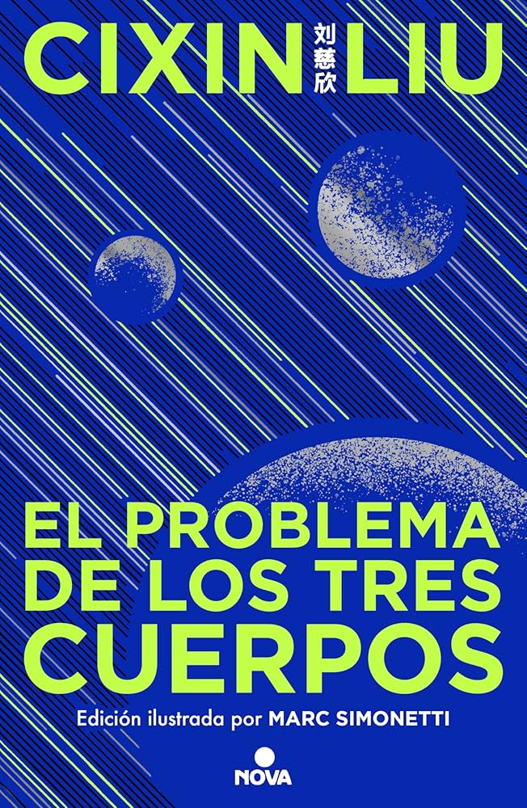

Libros Populares del Momento

Hábitos Atómicos
Autor: James Clear
Un libro práctico que muestra cómo pequeños cambios diarios pueden transformar tu vida.
Alas de Ónix
Autora: Rebecca Yarros
La esperada secuela de "Alas de Fuego", donde Violet enfrenta nuevas pruebas, traiciones y batallas internas.

Viento y Verdad
Autor: Brandon Sanderson
Una épica fantasía ambientada en el Cosmere, donde personajes complejos, intrigas y magia profunda se entrelazan en una historia inolvidable.

El Problema de los Tres Cuerpos
Autor: Liu Cixin
Uno de los libros más vendidos y comentados actualmente, impulsado por su adaptación y su mezcla de ciencia, misterio y filosofía.